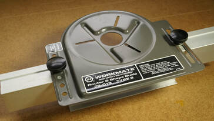

The Routermate 79-013 was one of the four original accessories that Black & Decker developed for the Workmate. It was introduced in 1977 at the price of $17.99.
Black & Decker literature described it thusly:
"Clamp it in Workmate for easier, more accurate routing of edges, beading, free-hand fancy design. Work guided by fence. Router rigidly held. Adjustable width and depth. Designed to be used with most routers. Capacity: Wood to 1-1/4" thick; cutters to 1" dia ."
The Routermate allows the Workmate to act much like a router table, but with the router mounted upright for overhead routing.
By 1979 Black & Decker had changed the name to the Router and Shape Guide. The top two photos below show the original Routermate box and the next two show a later box with the Router and Shape Guide name. If you enlarge the photo of the later box, you can see that the label on the tool itself still says "Routermate".
Workmate 79-001 Accessories
Routermate 79-013



Like the Workmate itself, the Routermate progressed through several different Types, with corresponding changes in the label on the mounting plate. Five of these are shown below, from oldest to newest. I have not seen a Type 3, 4, or 5, nor have I been able to notice any difference between the Types.
The first two photos are both of the Routermate Type 1, but with slightly different labels. The next two are both of the Type 2, but the first one is marked as a Routermate and the second is marked as a Router and Shape Guide. The fifth one is a Type 6.
The first two photos are both of the Routermate Type 1, but with slightly different labels. The next two are both of the Type 2, but the first one is marked as a Routermate and the second is marked as a Router and Shape Guide. The fifth one is a Type 6.


The other main part of the Routermate is the aluminum fence that clamps between the Workmate's jaws, supports the steel mounting plate with the router attached, and guides your workpiece as you run it past the bit. The next two photos show the assembled Routermate upside down. The router bit would protrude through the center hole in the mounting plate and the opening in the fence functions just like that in the fence of a router table. The third photo shows an alternative fence made of stamped steel that replaced the aluminum fence on a small number of the Type 2 Routermates.


The mounting plate has three radial slots that allow easy mounting of most routers that have a base plate mounted with three equally spaced screws. Routers with a different mounting pattern will require the user to drill mounting holes.
The following photos show an example of the setup and use of the Routermate to plow a 1/4" groove in a scrap piece.
First shows the router attached to the mounting plate. Second shows the mounting plate attached to the fence, which is clamped in the jaws of the Workmate, with the scrap workpiece sitting on the left end of the Workmate. The third photo shows clamping the fence of the Routermate between the jaws of the Workmate at the right height for the workpiece. The workpiece is placed on the Workmate alongside the fence and the Routermate assembly is lowered to rest on it with a thin spacer (some scrap plastic in this case) holding the mounting plate about 1/16" above the workpiece. The fourth photo shows the 1/4" straight bit set at the right projection for the desired groove. The fifth photo shows everything ready to go, with a featherboard to hold the workpiece against the fence. Note that because the router is overhead, the work must be fed left to right, the opposite of what you would do on a router table. The sixth photo shows the test groove.
The following photos show an example of the setup and use of the Routermate to plow a 1/4" groove in a scrap piece.
First shows the router attached to the mounting plate. Second shows the mounting plate attached to the fence, which is clamped in the jaws of the Workmate, with the scrap workpiece sitting on the left end of the Workmate. The third photo shows clamping the fence of the Routermate between the jaws of the Workmate at the right height for the workpiece. The workpiece is placed on the Workmate alongside the fence and the Routermate assembly is lowered to rest on it with a thin spacer (some scrap plastic in this case) holding the mounting plate about 1/16" above the workpiece. The fourth photo shows the 1/4" straight bit set at the right projection for the desired groove. The fifth photo shows everything ready to go, with a featherboard to hold the workpiece against the fence. Note that because the router is overhead, the work must be fed left to right, the opposite of what you would do on a router table. The sixth photo shows the test groove.


Once you get some experience with it, the Routermate is not a bad tool. The necessity of resetting the clearance for different thicknesses of work is a nuisance, but if you keep a dedicated 1/16" thick spacer piece handy it doesn't really take long. To set the depth of cut, you can't use a ruler, set-up block, or other methods you would use on a router table, because you don't have access to the bit. However, unlike a router table, it's fairly easy with the Routermate to use the router's own depth of cut adjustment because you have complete access to the top of the router. The most difficult adjustment is the distance of the bit from the fence, which is done by loosening the knobs holding the mounting plate to the fence and then moving the plate relative to the fence. It can be hard to do this with the precision you might need. You should normally count on making test cuts until you have it adjusted right.
If your router has a flat top, you can set it upside down while it's mounted on the Routermate and make adjustments in this position, much as you would on a router table. If you adjust depth of cut this way, be sure to account for the spacer you use when installing it back in the Workmate.
If your router has a flat top, you can set it upside down while it's mounted on the Routermate and make adjustments in this position, much as you would on a router table. If you adjust depth of cut this way, be sure to account for the spacer you use when installing it back in the Workmate.